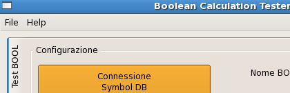
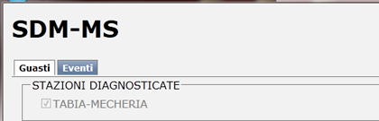
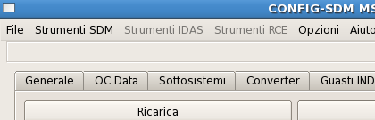
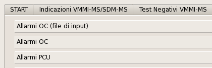
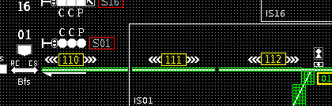

Boolean Calculation Tester
Lead engineer
The Boolean Calculation Tester is used to analyze and compare complex files wrote using reverse polish notation. Those files contain a series of expressions used to determinate the color of a graphical object designed inside the Q.L. that represents the status of a physical device in a train station.
Languages: C/C++ • Framework: Qt/Widgets • Database: PostgreSQL db
Diagnostic system - Client
Lead engineer
The Monitoring and Diagnostic System Client is an AJAX application in a built-in web server used to display, control and analyze all the events and failures in the connected train station(s).
Languages: C++, HTML, CSS, Javascript • Frameworks: Qt, Wt, Boost
Diagnostic system configurator
Lead engineer / Coordinator
The Monitoring and Diagnostic System Configurator is used to configure and export all the binary files needed from the Chronological Events Recorder System and from the Diagnostic system Server and Client applications.
Languages: C/C++ • Framework: Qt/Widgets • Database: SQLite • Multithreading
IPU Telegram Simulator
Developer
IPU Telegram simulator is used to simulate the central train station system and all its electronic devices. It is used to run simple and complex test for the frontend softwares such as the Diagnostic system.
Languages: C/C++ • Framework: Qt/Widgets
Q.L. configurator - Routing system
Developer
The QL configurator is meant to configure the VMMI - QL system included its advanced routing system for the train paths inside the stations. Using Dijkstra's algorithm to detect the shortest path for all the graphical objects, the configurator can discriminate and identify the best path.
Languages: C/C++ • Framework: Qt/Widgets • Database: PostgreSQL db
Chronological events recorder
Lead engineer
The Chronological events recorder is connected at the Diagnostic system and it is used to display with charts all the data saved from the system(s) and to backup them recording DVDs.
Language: C++ • Frameworks: Qt, Wt, Boost • Database: SQLite db